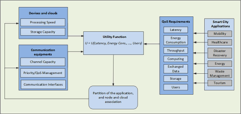

Abstract
This thesis collects the outcomes of a Ph.D. course in Electronics, Telecommunications, and Information Technologies Engineering and it is focused on the study and design of techniques able to optimize resources in distributed mobile platforms.
It is related to a typical smart city environment, to enhance quality, performance and interactivity of urban services.
The subject is the operation of computation offloading, intended as the delegation of certain computing tasks to an external platform, such as a cloud or a cluster of devices. Offloading the computation tasks can effectively expand the usability of mobile devices beyond their physical limits and may be necessary due to limitations of a system handling a particular task on its own.
The computation offloading within an ecosystem as a urban community, where a large amount of users are connected towards even multiple devices, is a challenging subject. In a very close future, smart cities will be peculiar sources of intensive computing tasks, since they are conceived as systems where e-governance will be not only transparent and fast, but also oriented to energy and water conservation, efficient waste disposal, city automation, seamless facilities to travel and affordable access to health management systems. Also traffic will need to be monitored intelligently, emergencies foreseen and resolved quickly, homes and citizens provided with a wide series of control and security devices. All these ambitious aspirations will require the deployment of infrastructures and systems where devices will generate massive data and should be orchestrated in a collective way, to pursue synergic goals. In this context, the computation offloading is an operation dealing with the optimization of urban services, to reduce costs and consumption of resources and to improve contact between citizens and government.
This dissertation is organized in three main parts, dealing with the optimization of the resources in a smart city background from diffeerent points of view.
The first part introduces the Urban Mobile Cloud Computing (UMCC) framework, a system model that takes into account a series of features related to Heterogeneous Networks (HetNets), cloud architectures, various characteristics of the Smart Mobile Devices (SMDs) and different types of smart city application, performed to pursue several goals.
The second part deals with a partial offoading operation, considering to delegate only a portion of the computation load to a cloud infrastructure. It is focused on the tradeoff between energy consumption and execution time, in a non-trivial multi-objective optimization approach. Furthermore, a utility function model developed from the economic field is introduced. It takes into account a series of parameters related to the UMCC, showing that, when the network is overloaded, the partial offoading permits to achieve the target throughput values with an energy consumption and a computational time reduced if compared with the total offoading of the computation tasks. In addition, the proposed UMCC framework and the partial computation offoading are applied to a vehicular environment for handling a real-time navigation application, so that the SMDs can exploit road side units and other neighbor devices forming clusters for delegating a shared application. It is shown that the clusterization allows to reduce the consumed energy in case of high traffc scenarios, optimizing the cluster size for different populations size and various offoading policies.
Finally, in the third part, the problem of Cell Association (CA) in a UMCC framework deals with the system as a community, thinking about to improve the collective performance and not only the achievement of a single device. A probabilistic algorithm that uses biased-randomization techniques is proposed as an efficient alternative to exact methods, which require unacceptable levels of computational time to solve real life instances. This probabilistic algorithm is able to provide near-optimal solutions in real time, thus outperforming by far the solutions provided by existing greedy heuristics. Since this algorithm takes into account all users in the assignment process, it avoids the selfish or myopic behavior of the greedy heuristic and, at the same time, is able to quickly find near-optimal solutions for allocation of the avaiable resources.
Introduction
According to the flagship publication of the United Nations World Urbanization Prospect, more than one half of the world population is living nowadays in urban areas, and about 70% will be city dwellers by 2050. Furthermore, the world population is estimated to increase in the second half of the 21st century, while the urban areas are expected to absorb all the predicted growth and to draw in some of the rural population. The United Nations report predicts that, by mid-century, there will be 27 megacities, with at least 10 million population, while at least half of the urban growth in the coming decades will occur in small cities with less than 500,000 people, envisioning therefore that cities, big or small, are becoming a determining shift in the organization of human society. Cities and megacities are predicted to magnify problems such as diffculty in waste management, scarcity of resources, air pollution, human health concerns, traffic congestion, and inadequate, deteriorating and aging infrastructures.
Concurrently with such urbanization effect, an extraordinary phenomenon concerning the Information and Communication Technology (ICT) is happening: smart mobile devices are becoming an essential part of human life and the most effective and convenient communication tools, not bounded in time and place. According to the Cisco Visual Networking Index, the number of mobile-connected devices has already overtaken the number of people in the world, and by 2018 it will be over 10 billion, including Machine to Machine (M2M) modules. Overall mobile data traffic is expected to have nearly an 11-fold increase in the next five years.
Urbanization tendency and smart mobile expansion are going to reach a relevant convergence point through the concept of smart city, an icon of a sustainable and livable city, projecting the ubiquitous and pervasive computing paradigms to urban spaces, focusing on developing city network infrastructures, optimizing traffc and transportation fows, lowering energy consumption and offering innovative services. It is through ICT that smart cities are truly turning smart [1], in particular by means of the exploitation of smart mobile devices, forming together with cloud computing the Mobile Cloud Computing (MCC), since, as suggested by Michael Batty, to understand cities we must view them not simply as places in space but as systems of networks and flows [2].
Original Contribution
In this dissertation, innovative techniques and methodologies aimed to enhance the performance of MCC applied to a smart city are proposed and investigated.
In particular the \gls{UMCC}, a global framework that can be adapted depending on the optimization objectives is introduced, highlighting the features that can affect the \gls{QoS} of various types of smart city related applications.
Furthermore, various optimization techniques, based on opportunely defined cost or utility functions, are presented and inspected for the optimization of the resources in the \gls{UMCC}.
Specifically:
- a partial offloading tecnique is determined for optimizing time and energy consumption in a smart city \glspl{HetNet} scenario, where smart mobile devices are supposed to perform a distributed application;
- a utility function model derived from the economic world has been presented, aiming to measure the \gls{QoS}, in order to choose the best access point in a \gls{HetNet} for offloading part of an application on the \gls{MCC};
- a cluster-based optimization technique is proposed and utilized in a distributed computing resource allocation, exploiting resource sharing, in high density \gls{SMD} environments.
During my Ph.D. course I had the opportunity to collaborate with the Internet Interdisciplinary Institute (IN3) at the Open University of Catalonia (UOC), where I contributed to develop new optimization heuristics for improving heterogeneous communication systems.
The applied approach is based on the use of biased randomization techniques, which have been used in the past to solve similar combinatorial optimization problems in the fields of logistics, transportation, and production.
This work extends their use to the field of smart cities and mobile telecommunications. Some numerical experiments contribute to illustrate the potential of the proposed approach. The outcomes of this research stay are described in \autoref{chap:socialBRA}.
Personal Publications
- D. Mazza, A. Pages, D. Tarchi, A. Juan, and G. E. Corazza, "A biased-randomized algorithm for mobile cloud computing in smart cities," Systems Journal, IEEE, Oct. 2015 (SUBMITTED TO).
- D. Mazza, D. Tarchi, and G. Corazza, "A cluster based computation offlooading technique for mobile cloud computing in a smart city scenario," in Proc. of IEEE Conference on Communication (ICC) 2016, Kuala Lumpur, Malaysia (SUBMITTED TO).
- D. Mazza, D. Tarchi, and G. E. Corazza, "A user-satisfaction based offloading technique for smart city applications," in Proc. of IEEE Globecom 2014, Austin, TX, USA, Dec. 2014.
- D. Mazza, D. Tarchi, and G. E. Corazza, "A partial offloading technique for wireless mobile cloud computing in smart cities," in Proc. of 2014 European Conference on Networks and Communications (EuCNC), Bologna, Italy, Jun. 2014.
- G. Avanzolini, A. Cappello, and D. Mazza, "Comparative evaluation of three elastance-resistance models of left ventricular mechanics," Computers in Cardiology, in Proceedings of, Sep. 1991, pp. 653-656.
Acknowledgments
This Ph.D. dissertation was carried out during three years of my life in which not only I have gained knowledge and accomplished an academic path, but also I have had the opportunity to proof and enrich my personality. I would like to thank Prof. Giovanni Emanuele Corazza and Prof. Daniele Tarchi for their precious advice and support during my Ph.D. studies. They helped me during every step of my work with unmatched competence and patience.
A sincere thanks goes to Prof. Ángel Alejandro Juan Pérez and Prof. Adela Páges Bernaus for giving me the chance to work with them at the DPCS IN3 Lab of the Open University of Catalonia: for their collaboration and for being always available to share projects and ideas and because my stay in Barcelona has been a unique experience for me, both professionally and personally.
I am also deeply grateful to Prof. Alessandro Vanelli Coralli, Coordinator of the Ph.D. Program in Electronics, Telecommunications, and Information Technologies, for making it possible to carry out this work.
A special acknowledgment goes also to all my colleagues that shared with me many important moments during my time at the University of Bologna - Roberta, Sergio, Vahid, Vincenzo - and at the Internet Interdisciplinary Institute IN3 in Barcelona - Aljoscha, Carlos, Jesica, Laura, Helena.
I also want to thank the reviewers of this thesis, Prof. Flavio Bonomi and Prof. Mohsen Guizani, for their many suggestions and help for greatly improving the quality of this work.
Infine, il piú grande ringraziamento va alla mia famiglia. Grazie a Gabriele, mio compagno di vita, per aver condiviso la mia esperienza e per avermi supportato e incoraggiato, ai miei genitori, per avermi infuso l'amore per lo studio e la ricerca, e a mio figlio Alessandro, che sempre mi ha dato la forza per continuare.
Part I - Urban Mobile Cloud Computing: a framework at the service of smart cities
Innovative projects of smart cities, aiming to make effective a vision where cities can use technology to meet sustainability goals, boost local economies, and improve urban services, have been adopted in the political agenda of many governments as a primary program, in a large number of developed and developing countries.
The ever-growing demand for services from citizens and institutions, intending to make the cities \textit{smarter} and improve the quality of life of the communities, has given a great boost to the conception of diverse wireless communication systems and has extended the envision of cloud architectures for providing infrastructures (\gls{IaaS}), platforms (\gls{PaaS}), and software (\gls{SaaS})\cite{CCTaxonomy,fantacci09} , offering computation, storage and network and going towards the integration with novel opportunistic communications as fog networking~\cite{opportunistic, Bonomi2012, Bonomi2014}.
In order to interact with city services, \gls{MCC} and wireless \glspl{HetNet} contribute in different and sinergic way for handling this smart city scenario, allowing ubiquitous and pervasive computing in a framework we called \gls{UMCC}.
In this first part of the dissertation, the proposed \gls{UMCC} system model is described and investigated. It takes into account a series of features related to \gls{HetNet}'s nodes, cloud architectures, \glspl{SMD}' characteristics, in association with several types of application and goals - mobility, healthcare, energy and waste management, and so on. It can be employed in the optimization of the \gls{QoS}'s requirements related to the needs of citizens.
Smart cities applications are gaining an increasing interest among administrations, citizens and technologists for their suitability in managing the everyday life. One of the major challenges is managing in an efficient way the presence of multiple applications in this \gls{UMCC} framework, in a Wireless \gls{HetNet} environment, alongside the presence of a \gls{MCC} infrastructure.
The content of the following chapter was extracted from publications [P1], [P2] and [P3].
1. The Urban Mobile Cloud Computing (UMCC) Architecture
1.1 Introduction to the UMCC in a smart city scenario
The increasing urbanization level of the world population has driven the development of technology toward the definition of a smart city geographic system, conceived as a wide area characterized by the presence of a multitude of smart devices, sensors and processing nodes aiming to distribute intelligence into the city; moreover, the pervasiveness of wireless technologies has led to the presence of heterogeneous networks operating simultaneously in the same city area. One of the main challenges in this context is to provide solutions able to optimize jointly the activities of data transfer, exploiting the heterogeneous networks, and data processing, by using different types of devices. In this chapter, the \gls{UMCC} framework is introduced, considering a mobile cloud computing model that describes the flows of data and operations taking place in the smart city scenario.
The challenges and the opportunities of exploiting the \gls{UMCC} are discussed in relation to smart city solutions, highlighting the features that can affect the \gls{QoS} of various types of smart city related services.
The \gls{UMCC} sprang from the \gls{MCC}, that is gaining an increasing interest in the recent years, due to the possibility of exploiting both cloud computing and mobile devices for enabling a distributed cloud infrastructure~\cite{DinhSurvey}.
Considering the peculiarity of the \gls{MCC}, we can observe that, on one hand, the cloud computing idea has been introduced as a mean for allowing a remote computation, storage and management of information, and, on the other hand, the mobility skill allows to gain by the most modern smart devices and broadband connections for creating a distributed and flexible virtual environment.
At the same time, the recent advances in the wireless technologies are defining a novel pervasive scenario where several heterogeneous wireless networks interact among them, giving the users the ability to select the best network among those present in a certain area.
As a consequence, the development of the \gls{UMCC} is introduced, gaining from both computing and wireless communication technologies. It is a challenging opportunity for the creation of smart city infrastructures, providing solutions fulfilling the urgent need for richer application and services, requested from citizens that, as mobile users, are facing many demanding tasks in relation to mobile device resources as battery life, storage and bandwidth.
The triple role of Smart Mobile Devices
By analyzing the technology systems underlying a smart city framework, mobile devices can be considered in a three-fold way, as illustrated in \autoref{fig:SMDclassification}:
- Sensors
They can acquire different types of data regarding the users and the environment, transmitting a large amount of information to the cloud in real time, by means of wireless communication systems. This is the underlying concept of \gls{IoT}, profitably exploited to improve urban life, for instance for extracting descriptive and predictive models in the urban context of cities~\cite{IoTCC}. - Nodes:
They can form distributed mobile clouds where the neighboring mobile devices are merged for resource sharing, becoming integral part of the network. Furthermore, they can form \glspl{VCN} offering content routing, security, privacy, monitoring, virtualization services~\cite{Gerla}, easy to be used for providing smart city services and applications, in particular for traffic and mobility control. This is the crucial concept of fog networking, where a collaborative multitude of users carry out a substantial amount of storage, communication, and data management in a collaborative way. - Outputs:
They can make the citizens aware of results and able to decide consequently, or become actuators without need of human intervention. This is the concept underlying \gls{M2M} communications where computers, embedded processors, smart sensors, actuators and mobile devices acquire information and act in an autonomous way~\cite{M2M}.
To perform this triple role, mobile devices have to become part of an infrastructure that is constituted by different cloud topologies and, at the same time, have to exploit heterogeneous wireless link technologies, allowing to address the different requirements of a smart city scenario. This infrastructure starts from the concept of \gls{MCC}, where the cloud works as a powerful complement to resource-constrained mobile devices.
{kind=link}
The vision of \gls{MCC} has increasingly become a source of interest, beginning from the early 2000s, when Amazon realized that a huge amount of space on their premises was underused. This awareness pushed toward the implementation of remote services, gaining by the presence of storage space and computing power and creating a cloud system. Alongside with the expansion of wireless technologies, the cloud computing has been integrated through a broadband system, exploiting the opportunity of working in mobility. The \glspl{SMD}, then, can use \gls{MCC} devolving demanding tasks and referring to it for data storage.
Computation Offloading
The strategy allowing to delegate to one or more cloud computing elements storage and computing functions is commonly called \emph{cyberforaging} or \emph{computation offloading}. It allows to tackle with the limited battery power and computation capacity of the \glspl{SMD}, and plays a key role in a smart environment where wireless communication is of utmost relevance, particularly in mobility and traffic control domains~\cite{Barbarossa2014}. If the storage is one of the most common and legacy activities that can be delegated to a remote cloud infrastructure, recently, thanks to modern programming paradigms, it is possible to allot even only a part of the computation load to a remote unit. This allows users to optimize the system performance by offloading only a fraction of the application to be computed, or distributing the application among different cloud structures. Offloading is an effective network congestion reduction strategy to solve the overload issue compared to scaling and optimisation \cite{Juniper}. It enables network operators to reduce the congestion in the cellular networks, while for the end-user it provides cost savings on data services and higher bandwidth availability.
1.2 Cloud Topologies
In relation to the \gls{SMD}'s roles previous described, we take into account various cloud topologies. This is a different categorization with respect to the common taxonomy used for cloud computing - \gls{SaaS}, \gls{PaaS} and \gls{IaaS}. It looks on the different interaction among the nodes that form the cloud, instead of the services provided by the cloud itself, so we can distinguish among centralized cloud, cloudlet, distributed mobile cloud and a combination of all, as shown in \autoref{fig:UMCC_topologies}.
{kind=link}
Centralized Cloud
A centralized cloud provides the citizens to interact remotely, e.g., for accessing to open data delivered by the public administrations. It refers to the presence of a remote cloud computing infrastructure having a huge amount of storage space and computing power, virtually infinite, offering the major advantage of the elasticity of resource provisioning. The centralized cloud infrastructure is often used for delivering the computing processes to remote clusters, owing a higher computing power, and/or for storing big amount of data. The centralized cloud allows to reduce the computing time by exploiting powerful processing units, but it could suffer from the distribution latency, due to the data transfer from the users to the cloud and \textit{vice versa}, the congestion, due to the multiple users exploitations, and the resiliency, due to the presence of a single performing infrastructure leading to the \gls{SPOF} issue.
Cloudlet
One of the main drawback of the centralized cloud is the great distance between the mobile devices, requesting services, and the clusters, performing computation in the cloud. Even if the \gls{SPOF} issue is often resolved by implementing mirroring or redundancy solutions, the big distance that may occur between users and centralized clouds can be better addressed by means of the introduction of cloudlets, representing small clouds installed in proximity of the users. Furthermore, the inclusion of cloudlets allows a most appropriate sizing depending on the number of contemporary requests of the users.
Cloudlets are fixed small cloud infrastructures installed between the mobile devices and the centralized cloud, limiting their exploitation to the users in a specific area. Their introduction allows to decrease the latency of the access to cloud services by reducing the transfer distance at the cost of using smaller and less powerful cloud devices.
Distributed Mobile Cloud
A third configuration can address the issue of non persistent connectivity, whereas both the previous concepts must assume a durable state of connection. In a distributed mobile cloud the neighboring mobile devices are pooled together for resource sharing~\cite{Fangming}. An application from a mobile device can be either processed in a distributed and collaborative fashion on all the mobile devices or handled by a particular mobile device that acts as a server.
The possibility of implementing a distributed mobile cloud infrastructure has become a reality since the introduction of smarter and powerful mobile devices, e.g., smartphones, tablet, phablet, having the ability, even if limited, of computing and storaging. Moreover, it has to be noted that their number is still increasing, leading to a pervasive presence and allowing to form a \emph{cloud} of pervasive distributed devices that can interact among them. This \emph{fog network} architecture uses one or a collaborative multitude of end-user clients or near-user edge devices to carry out a substantial amount of storage (rather than stored in centralized clouds), communication, and control, configuration, measurement and management \cite{Bonomi2012, Bonomi2014}. It can be seen as the \emph{fog layer} that encapsulates phisical objects - equipped with computing, storage, networking, sensing, and/or actuating resources - and constitutes a piece of a wider \gls{CARS} architecture \cite{Guizani2014}, a geographically distributed platform that connects many billions of sensors and things, and provides multitier layers of abstraction of sensors and sensor networks, enabling the \gls{SenaaS}.
Combination of different topologies
The proposed framework foresees the joint exploitation of the three aforementioned topologies. As outlined before, they are characterized by different features, leading to a different usage depending on the scenario. Hence, a joint exploitation could steer to a more efficient usage aiming to achieve the performance goals of a certain application. As it will be better specified below, a smart city scenario is characterized by the presence of a lot of different applications, each one with different characteristics and requirements. An integrated \gls{UMCC} framework composed by centralized clouds, cloudlets and distributed mobile clouds, as shown in \autoref{fig:UMCC_topologies}, allows to respect the application requirements with regard to other solution in a more efficient way.
1.3 Types of RATs
In order to connect the devices, different types of \glspl{RAT} should be taken into consideration, providing a pervasive wireless coverage.
Multiple \glspl{RAT}, such as \gls{IEEE 802.11}, mobile \gls{WiMAX}, \gls{HSPA+}, \gls{LTE} and \gls{WiFi}, have to be integrated to form a \gls{HetNet}. For enhancing the network capacity, generally there is an increasing interest in deploying relays, distributed antennas and small cellular base stations - \glspl{picocell}, \glspl{femtocell}, etc - indoors in residential homes and offices as well as outdoors in amusement parks and busy intersections. These new network deployments, comprised of a mix of low-power nodes underlying the conventional homogeneous macrocell network, by deploying additional small cells within the local-area range and bringing the network closer to users, can significantly boost the overall network capacity through a better spatial resource reuse. Inspired by the attractive features and potential advantages of \glspl{HetNet}, their development have gained much momentum in the wireless industry and research communities during the past few years. The heterogeneous elements are distinguished by their transmit powers/coverage areas, physical size, backhaul, and propagation characteristics.
We can basically distinguish between two components, i.e., macrocells and small cells, where the former provide mobility while the latter boost coverage and capacity.
Macrocells
The distance between the access points (base stations of the macrocells) is usually higher than 500~m. Thanks to this type of base stations the environment is completely covered and the devices can move by minimizing the handover frequency. On the other hand, in macrocells the system suffers for channel fading and traffic congestion. This leads to a lack of stability, not allowing to reach very high data rate. The technology used for this type of cells refers to the cellular networks, e.g. \gls{3G} and \gls{LTE}.
Small Cells
Small cells are characterized by low power radio access nodes, which have a cover range of about 100-200~m or less. We can distinguish between \glspl{picocell}, for providing hotspot coverage in public places - malls, airports and stadiums - without limits in terms of number of connected devices, and \glspl{femtocell}, for covering a home or small business area, available only for selected devices. \Glspl{picocell} and \glspl{femtocell} have been recently introduced as a way for increasing the coverage and maximize the resource allocation in \gls{LTE} networks. We also consider \gls{WiFi} access points as nodes with a small cover range (less than 100 m) which can typically communicate with a small number of client devices. However, the actual range of communication can vary significantly, depending on such variables as indoor or outdoor placement, the current weather, operating radio frequency, and the power output of devices.
1.4 Challenges of the UMCC
The \gls{UMCC} approach foresees the definition of a scenario where smart city applications can exploit jointly the three topologies, as shown in \autoref{fig:offloading-distribution}, by distributing and performing among the different parts composing the framework. The application requested by a particular \gls{SMD}, signed as the \gls{RSMD}, is partitioned and distributed among the different clouds using the available \glspl{RAT}. In the example of \autoref{fig:offloading-distribution}, the application is divided among the centralized cloud, two cloudlets, and a distributed cloud formed by five devices. Furthermore, part of the application can be computed locally by the \gls{RSMD} itself.
The main issue is that, for transferring data from the requesting mobile device to the selected cloud topology, a certain time is required. This mostly depends on some communication parameters of the selected \gls{RAT}, such as the end-to-end throughput, the amount of users, the \gls{QoS} management of a certain transmission technology between the user device and each type of cloud processing unit. Furthermore, in terms of energy consumption, it should be taken into account the tradeoff between the energy saved in offloading part of the application to the cloud and the energy spent in sending the data.
{kind=link}
Hence, when a \gls{RSMD} needs to select the clouds infrastructures to be used for computing the smart city application, two main elements have to be taken into account:
- the processing and storage devices - smart mobiles, \textit{per se} or together forming distributed mobile clouds, and cloud servers, constituting the cloudlets and the centralized cloud;
- the wireless transmission equipments, - different \gls{RAT} nodes entailing diverse transmission speeds in relation to their own channel capacity and to the number of linked devices.
In \autoref{fig:offloading-distribution}, the \gls{UMCC} framework is sketched by representing the functional flows of the architecture. Whenever a smart city application should be performed, the citizen within the \gls{UMCC} can select among different \gls{MCC} infrastructures, i.e., centralized clouds, cloudlets, and distributed mobile clouds, aiming to respect the requirements of the specific application depending on their features. The distribution depends on the application requirements, and the \gls{UMCC} features; its optimization will be discussed in the Section \ref{sec:cost}.
{kind=link}
Fig 1.4 - The utility function acts for distributing and performing the application in different parts of the Urban MCC
------------------------- When $a \ne 0$, there are two solutions to \(ax^2 + bx + c = 0\) and they are $$x = {-b \pm \sqrt{b^2-4ac} \over 2a}.$$ $$App = App(O,D,S,T_\textit{app},E_\textit{app},\eta_\textit{app})$$ In equation \eqref{eq:sample}, we find the value of an interesting integral: \begin{equation} \int_0^\infty \frac{x^3}{e^x-1}\,dx = \frac{\pi^4}{15} \label{eq:sample} \end{equation}